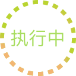
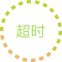

<!DOCTYPE html>
  <html>
  <head>
      <meta charset="utf-8">
      <meta name="viewport" content="maximum-scale=1.0,minimum-scale=1.0,user-scalable=0,width=device-width,initial-scale=1.0"/>
      <title>title</title>
      <link rel="stylesheet" type="text/css" href="../../css/common/public.css"/>
      <link rel="stylesheet" type="text/css" href="../../css/planting/stepList_win.css"/>
      <style media="screen">
          li{

          }
      </style>
  </head>
  <body>
      <div id="stepList">

      </div>
  <script type="text/javascript" src="../../script/common/api.js"></script>
  <script type="text/javascript" src="../../script/common/jquery.min.js"></script>
  <script type="text/javascript" src="../../script/common/jquery.tmpl.js"></script>
  <script type="text/javascript" src="../../script/common/rem-750.js"></script>
  <script type="text/javascript" src="../../script/common/pds.ajax.js"></script>
  <script type="text/template" id='step'>
            <ul class="step">
               {{each(i,item) stepData.data}}
                   <li class="clearfix"  onclick="goDetail(this)" data-id="${item.id}" data-processId="${item.processId}" data-processName="${item.processIdName}">
                     {{if item.flag=="执行中"}}
                        <div class="circle_large"></div>
                        {{else}}
                         <div class="circle"></div>
                    {{/if}}
                       <div class="line">
                       </div>
                       <div>
                         
                       </div>
                       <div class="pub_step">
                             <div class="title">${item.processIdName}</div></br>
                             <div class="triangle-left"></div>
                             <div class="time">
                               计划开始时间:${item.startDate.split(" ")[0]}
                             </div>
                       </div>
                       {{if item.flag=="执行中"}}
                           
                           {{else item.flag=="已完成"}}
                           
                           {{else item.flag=="超时"}}
                           
                       {{/if}}
                   </li>
               {{/each}}
             </ul>
  </script>
  <script type="text/javascript">
      var land_id;//地块id
      var farm_id;
      var plan_id;//小计划id
      var processId;
      var id_ = null;
      apiready = function(){
              //alert(api.pageParam.largeId)
              //接收传过来的地块id和小计划id
              farm_id = api.pageParam.farmId;
              plan_id = api.pageParam.planId;
              landName = api.pageParam.landName;
              // alert(landName);
              getPlanProcess(farm_id,plan_id);
      };
      // 跳转工序详情页面
      function goDetail(dom){
        var buriedPoint = pds.buriedPoint();
            buriedPoint.pageId = 'page_process_list_admin';
            buriedPoint.eventId = 'button_check_the_details_subplan_page_process_list_admin';
            pds.ajaxSubmit({
            url:"app/buried_point/save",
            data:{"point":buriedPoint},
            success:function(v){
            }
        })
        processId = $(dom).attr('data-processId');
        processIdName = $(dom).attr('data-processName');

        id_ = $(dom).attr('data-id');
        api.openWin({
          name : 'plantPlan_win',
          url : './plantPlan_win.html',
          reload : true,
          pageParam: {
             farmId:api.pageParam.farmId,//基地id
             landId:api.pageParam.landId,//地块id
             largeId:api.pageParam.largeId,//大计划id
             planId:api.pageParam.planId,//小计划id
             year:api.pageParam.year,//小计划id
             processId:processId,
             processIdName:processIdName,
             id: id_
          }
        });
      }

      //获取工序列表
      function getPlanProcess(farmId,planId){
            pds.ajaxSubmit({
               url:"app/plant/searchProcess",
               type : "GET",
               data:{
                    farmId:farmId,
                    planId:planId
               },
               success:function(e){
                  //alert("success");
                  //alert(JSON.stringify(e));
                  if(e.status =='ok' && e.data != null && e.data != [] && e.data.length!=0){
                      stepData = e;
                      $("#stepList").append($("#step").tmpl(stepData));
                  }else{
                      $("#stepList").html('<span">暂无数据</span>');
                  }
               },
               error:function(e){
                  api.alert({msg:"服务器异常，请联系管理员!"});
               }
            });
      };
      function back(){
          api.closeWin({

          });
        //   api.sendEvent( {
        //    name: 'openMapEvent'
        //  } )
      }
      // // 假数据
      // var stepData = {
      //   data:[
      //     {'id':1,'stepName':'一次中耕培土','time':'2017/11/25','doing':1},
      //     {'id':2,'stepName':'播种','time':'2017/11/25','doing':2},
      //     {'id':3,'stepName':'翻地','time':'2017/11/25','doing':2},
      //     {'id':4,'stepName':'打药','time':'2017/11/25','doing':1}
      //   ]
      // }
  </script>
  </body>
  </html>
